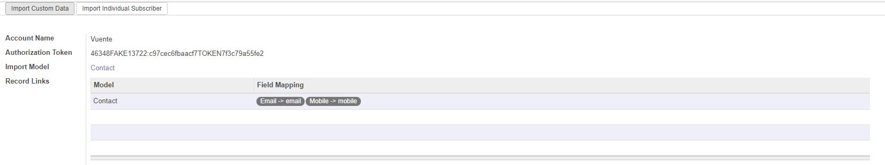
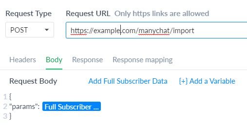
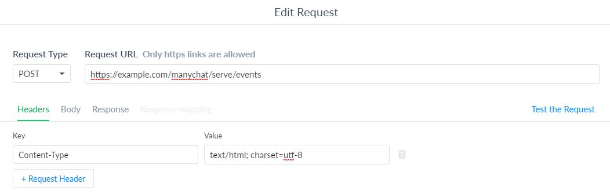

Description
ManyChat Integration
Instructions
Initial Setup
Settup as many ManyChat pages as you want to import subscriber data from

- Login to ManyChat and go to Settings->API->Get Token to get a authorization token
- Login to Odoo and assign your user account to the 'ManyChat Integrator' group
- Go into the Integrations->ManyChat->Pages menu and create a new record with the authorization token from step 1
- Click on 'Import Custom Data' button
Import a subscriber
Create records in other models based on custom field data mapping

- Go into the Integrations->ManyChat->Pages menu and select a ManyChat page
- Select a model you want the subscribers imported into
- Create a record link for the import model, selecting what custom field data goes into what field
- Click the 'Import Individual Subscriber' button and enter in the subscriber ID
- Once you click the 'Import Subscriber' button the ManyChat subscriber will be imported or updated if it already exists
Handle External Requests
Update data as it is received from ManyChat using external requests

For URL use <your_domain>/manychat/import
For request body use
{
"params": [Full Subscriber Data]
}
Serve Dynamic Content
Send data such as upcoming events.

- Go into the Integrations->ManyChat->Dynamic Content Server menu
- Give the Dynamic content server a name and slug then select which model you will retrieve data from e.g. event.event
- Set a filter so only certain records are returned
- Create a series of messages you want sent out, use of dynmaic placeholders is allowed
- Go into ManyChat and place down a Dynamic Content block
- For URL use <your_domain>/manychat/serve/<server_slug>
- Add a headers with key of 'Content-Type' and value of 'text/html; charset=utf-8'
Add record links
Link records from other models so they also get updated
- Go into the Integrations->ManyChat->Subscribers menu and select a subscriber
- Click the 'Create Record Link' button, the popup will surgest records based on custom field data e.g. ManyChat email = Lead Email
- Select the records you wish to link and a link will be formed so they stay up to date with any data obtained from ManyChat
See Also
manychat_integration_crm for the ability to import subscribers as leads
manychat_integration_website to easily add ManyChat widgets to your website